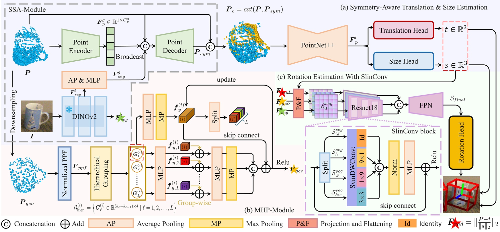
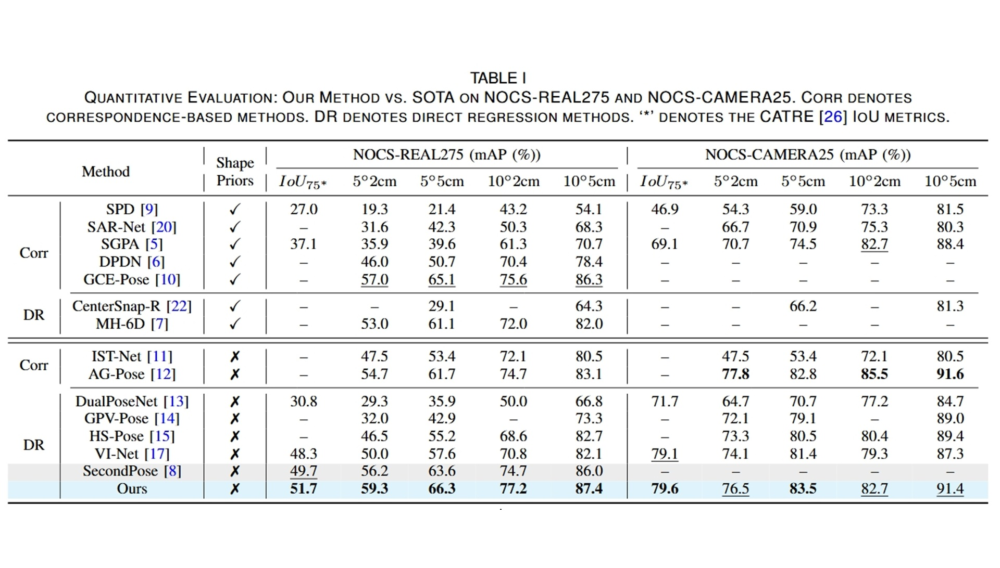
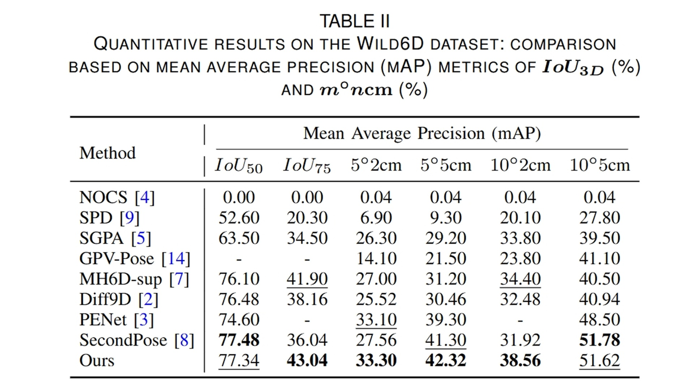
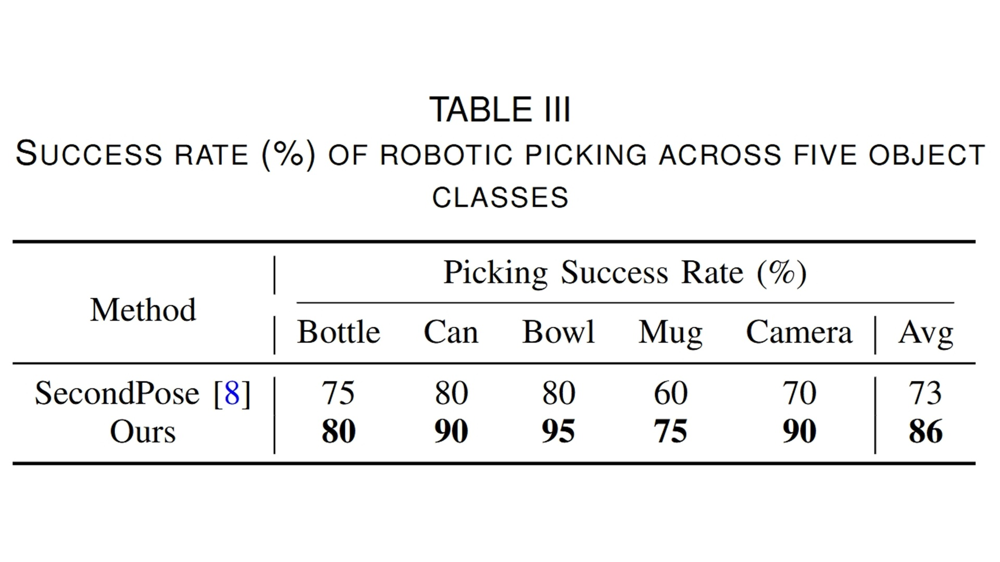
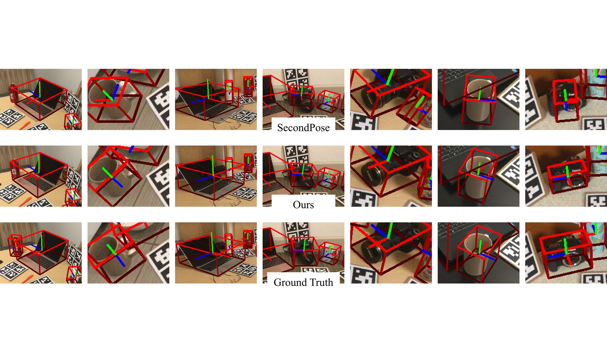
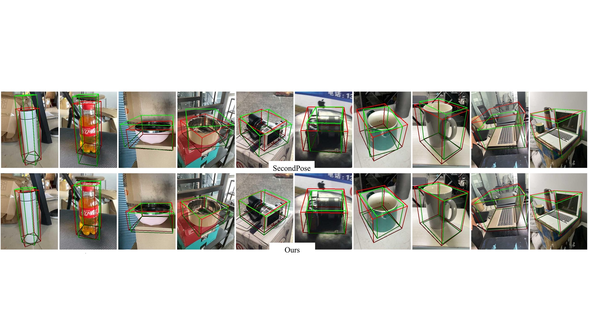
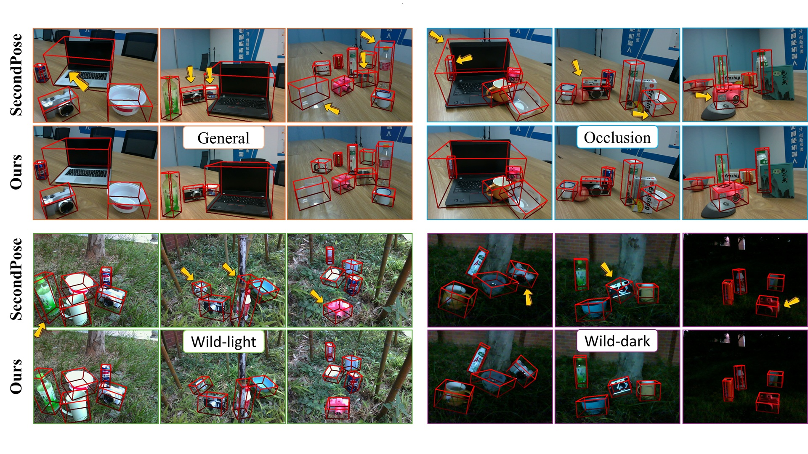
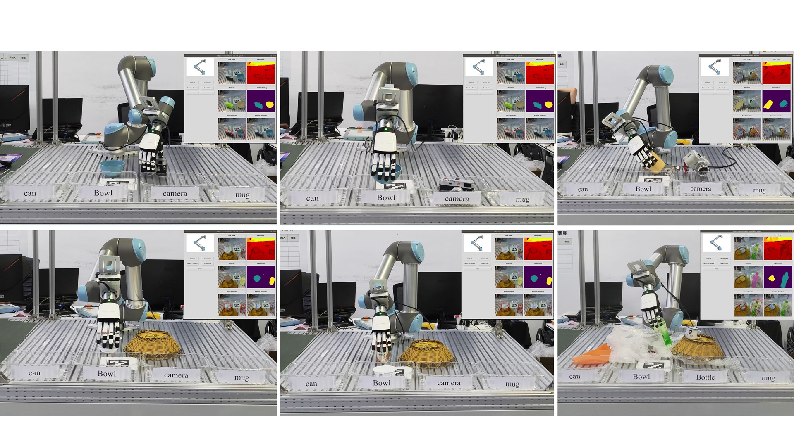

Symmetry-Aware 9D Pose Estimation with Sim(3)-Consistent Feature and Spherical Inception Convolution for Robotic Picking
Abstract
Robotic picking task relies strongly on accurate object pose estimation. However, current instance-level methods for this task struggle with generalization to unseen objects. Category-level methods seek to address this; but remain constrained by low accuracy - due to the complexities of learning in the non-linear Sim(3) space and intra-class variations. We introduce an effective robotic picking technique that features two key innovations: (1) A translation and size estimator, featuring a semantic-guided symmetry-aware module that leverages robust generalization capabilities of a large vision model (LVM) to infer symmetry points, resulting in accurate translation and size without shape priors. This result serves as a prior for rotation estimation, thereby reducing the difficulty of learning in the non-linear Sim(3) space and laying a robust foundation for tackling the inherently more challenging rotation estimation. (2) A feature fusion module, based on our proposed spherical large-kernel inception convolution, fuses semantic features from the LVM with systematically computed geometric features to extract essential pose features from intra-class variations and model long-range dependencies on a spherical surface. This improves rotation estimation while avoiding heavy computational costs associated with Transformers. Built upon these innovations, we develop a robust robotic picking system capable of handling a variety of objects. Extensive experiments demonstrate that our method achieves SOTA performance on benchmark datasets and challenging real-world scenes.
Method
Overview of SSH-Pose, where the three background colors represent its three main components, and the two dashed boxes denote its two sub-modules respectively.

Experiment

Quantitative on NOCS-REAL275.

Quantitative on WILD6D.

Quantitative on Picking.

visualization on NOCS-REAL275.

visualization on WILD6D.

visualization on real-world.
